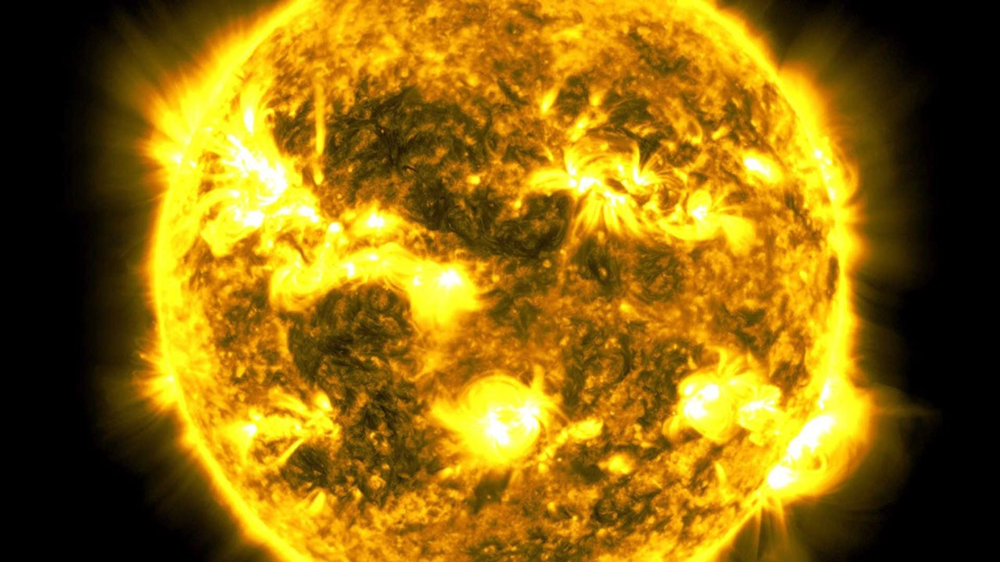

PLANETARY BUILDING BLOCKS
The asteroid belt contains remnants of the material that could have formed a planet. Jupiter's strong gravity helped prevent those fragments from easily assembling into one large world.
The Solar System is not simply a collection of eight planets. It is a vast, evolving system of stars, worlds, debris, ice, magnetic fields, and ancient leftovers from its birth.
Before there were planets, there was a cloud of gas and dust. Gravity turned that cloud into the architecture we see today.
Our Solar System formed about 4.6 billion years ago from a cold, rotating cloud of gas and dust called the solar nebula. A disturbance—possibly a shock wave from a nearby stellar event—helped trigger gravitational collapse.
As the cloud collapsed, most of its material fell toward the center and became increasingly dense and hot. The rest flattened into a rotating protoplanetary disk. At the center, a young Sun began gathering enough mass and pressure for nuclear fusion to ignite.
Inside the disk, tiny grains collided and stuck together. Dust became pebbles, pebbles became planetesimals, and gravity eventually assembled many of those bodies into planets. The leftover material became asteroids, comets, dwarf planets, moons, and countless smaller objects.
Gravity causes a giant cloud of gas and dust to collapse. Conservation of angular momentum makes the material spin faster and flatten into a disk.
Material concentrates at the center until temperatures and pressures become high enough for sustained hydrogen fusion—the process that powers the Sun today.
Within the disk, collisions and gravity build larger bodies. Rocky planets form in the hotter inner region, while giant planets grow farther out where ices can survive.
Solar wind, gravity, collisions, and planetary migration reshape the young system. The remaining debris becomes the smaller bodies still orbiting the Sun.
The Sun contains nearly all of the Solar System's mass and supplies the energy that drives Earth's climate, weather, and life.

The Sun is a huge sphere of plasma roughly 1.39 million kilometers across. It is powered by nuclear fusion in its core, where hydrogen nuclei combine to form helium and release enormous amounts of energy.
That energy moves outward through the Sun and eventually escapes from its visible surface, the photosphere. The Sun also constantly releases charged particles in the solar wind. Those particles travel far beyond the planets and help define the giant bubble around our star called the heliosphere.
Almost all of the Solar System's mass is concentrated in the Sun.
The Sun's diameter is about 109 times Earth's diameter.
The Sun formed at roughly the same time as the rest of the Solar System.
A vast population of rocky leftovers from the Solar System's formation—far more interesting than a simple ring of rocks.
The asteroid belt contains remnants of the material that could have formed a planet. Jupiter's strong gravity helped prevent those fragments from easily assembling into one large world.
Spacecraft can travel through the asteroid belt without weaving between packed rocks. The objects are separated by enormous distances, and most of the belt's volume is empty space.
The largest object in the main belt is Ceres, a dwarf planet whose rounded shape distinguishes it from most smaller asteroids.
The Solar System doesn't suddenly end after Neptune. Beyond it lies a huge population of icy bodies and ancient material.
Far beyond the giant planets, temperatures are low enough for volatile substances such as water, methane, and ammonia to remain frozen. These distant regions preserve some of the most primitive material left over from the Solar System's formation.
The Kuiper Belt is a broad, flattened region beyond Neptune populated by icy bodies. Pluto is one of its most famous residents. Many short-period comets originate from this distant reservoir.
Pluto, Eris, Haumea, Makemake, and Ceres are recognized dwarf planets. They are large enough for gravity to make them roughly round, but they have not cleared their orbital neighborhoods.
If the Kuiper Belt is the Solar System's icy outskirts, the Oort Cloud may be its enormous spherical frontier.

The Oort Cloud is a hypothesized, extremely distant shell of icy objects surrounding the Solar System. We have not directly observed it as a cloud, but the long-period comets that enter the inner Solar System provide evidence for a distant reservoir of this kind.
Unlike the flattened planetary system, the Oort Cloud is expected to extend in all directions. Some models place its outer edge thousands to perhaps tens of thousands of astronomical units from the Sun. At those distances, the Sun's gravitational hold becomes extraordinarily weak.
One astronomical unit is the average Earth–Sun distance. Neptune orbits at about 30 AU. The Oort Cloud, if it exists as predicted, would be vastly farther away—making the planetary region a tiny central neighborhood inside a much larger stellar environment.
The Solar System has a boundary shaped not only by gravity, but by a wind of charged particles flowing outward from the Sun.
The solar wind streams continuously from the Sun. As it travels outward, it creates a vast bubble called the heliosphere. The boundary where the solar wind is slowed dramatically by the surrounding interstellar medium is called the heliopause.
Voyager 1 and Voyager 2 crossed the heliopause and entered interstellar space, giving humanity direct measurements from beyond the Sun's dominant particle environment. Even there, the Sun remains part of the story: gravity continues to influence objects far beyond the planets.
The familiar worlds are only one component of the Solar System.
The Sun dominates the system's mass and controls the orbits of its major bodies.
From small bodies to distant comet reservoirs, the system is still being explored.